,
,  at the expense of the other
at the expense of the other Definition
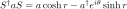
(Slusher et al. 1985). For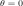
, the rotated quadratures of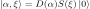
have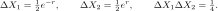
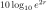
. Squeezed vacuum contains only even photon numbers, with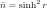
(Stoler 1970).Generation (derivation)
A
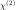
crystal pumped at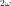
gives the interaction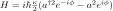
(the pump is classical): its evolution operator is exactly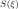
with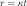
. Physically, photon pairs created together correlate the noise of the two sidebands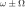
. In a cavity (OPO below threshold) the output squeezing spectrum is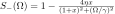
, the pump parameter.
the pump parameter.
Worked example
LIGO injects  6 dB of measured squeezing: shot-noise amplitude falls by
6 dB of measured squeezing: shot-noise amplitude falls by
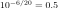
, i.e. sensitivity gains a factor 2 at high frequency, equivalent to 4× laser power without the extra thermal load. Losses degrade squeezing as
degrade squeezing as 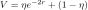
: with 30% loss even infinite squeezing gives at most 5.2 dB.Engineering applications
Gravitational-wave detectors (frequency-dependent squeezing), quantum-enhanced microscopy and magnetometry, Josephson parametric amplifiers squeezing microwave fields for qubit read-out, continuous-variable quantum computing.
Pitfall
Squeezing is fragile against loss: any attenuation mixes in vacuum noise. Squeezed light needs low-loss optics and high-efficiency photodiodes.